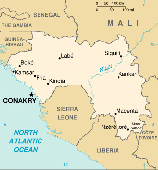

|
Guinea | |
| Introduction Geography People Government Economy Communications Transportation Military Transnational Issues | ||
|  | ||
| Guinea | Introduction | Top of Page |
| Background: | Independent from France since 1958, Guinea did not hold democratic elections until 1993 when Gen. Lansana CONTE (head of the military government) was elected president of the civilian government. He was reelected in 1998. Unrest in Sierra Leone has spilled over into Guinea, threatening stability and creating a humanitarian emergency. |
| Guinea | Geography | Top of Page |
| Location: | Western Africa, bordering the North Atlantic Ocean, between Guinea-Bissau and Sierra Leone |
| Geographic coordinates: | 11 00 N, 10 00 W |
| Map references: | Africa |
| Area: |
total:
245,857 sq km
land: 245,857 sq km water: 0 sq km |
| Area - comparative: | slightly smaller than Oregon |
| Land boundaries: |
total:
3,399 km
border countries: Cote d'Ivoire 610 km, Guinea-Bissau 386 km, Liberia 563 km, Mali 858 km, Senegal 330 km, Sierra Leone 652 km |
| Coastline: | 320 km |
| Maritime claims: |
exclusive economic zone:
200 NM
territorial sea: 12 NM |
| Climate: | generally hot and humid; monsoonal-type rainy season (June to November) with southwesterly winds; dry season (December to May) with northeasterly harmattan winds |
| Terrain: | generally flat coastal plain, hilly to mountainous interior |
| Elevation extremes: |
lowest point:
Atlantic Ocean 0 m
highest point: Mont Nimba 1,752 m |
| Natural resources: | bauxite, iron ore, diamonds, gold, uranium, hydropower, fish |
| Land use: |
arable land:
2%
permanent crops: 0% permanent pastures: 22% forests and woodland: 59% other: 17% (1993 est.) |
| Irrigated land: | 930 sq km (1993 est.) |
| Natural hazards: | hot, dry, dusty harmattan haze may reduce visibility during dry season |
| Environment - current issues: | deforestation; inadequate supplies of potable water; desertification; soil contamination and erosion; overfishing, overpopulation in forest region |
| Environment - international agreements: |
party to:
Biodiversity, Climate Change, Climate Change-Kyoto Protocol, Desertification, Endangered Species, Hazardous Wastes, Law of the Sea, Ozone Layer Protection, Wetlands, Whaling
signed, but not ratified: none of the selected agreements |
| Guinea | People | Top of Page |
| Population: | 7,613,870 (July 2001 est.) |
| Age structure: |
0-14 years:
43.12% (male 1,637,000; female 1,645,786)
15-64 years: 54.19% (male 2,015,199; female 2,110,745) 65 years and over: 2.69% (male 84,586; female 120,554) (2001 est.) |
| Population growth rate: | 1.96% (2001 est.) |
| Birth rate: | 39.78 births/1,000 population (2001 est.) |
| Death rate: | 17.53 deaths/1,000 population (2001 est.) |
| Net migration rate: |
-2.63 migrant(s)/1,000 population (2001 est.)
note: as a result of civil war in neighboring countries, Guinea is host to almost half a million Liberian and Sierra Leonean refugees |
| Sex ratio: |
at birth:
1.03 male(s)/female
under 15 years: 0.99 male(s)/female 15-64 years: 0.95 male(s)/female 65 years and over: 0.7 male(s)/female total population: 0.96 male(s)/female (2001 est.) |
| Infant mortality rate: | 129.03 deaths/1,000 live births (2001 est.) |
| Life expectancy at birth: |
total population:
45.91 years
male: 43.49 years female: 48.42 years (2001 est.) |
| Total fertility rate: | 5.39 children born/woman (2001 est.) |
| HIV/AIDS - adult prevalence rate: | 1.54% (1999 est.) |
| HIV/AIDS - people living with HIV/AIDS: | 55,000 (1999 est.) |
| HIV/AIDS - deaths: | 5,600 (1999 est.) |
| Nationality: |
noun:
Guinean(s)
adjective: Guinean |
| Ethnic groups: | Peuhl 40%, Malinke 30%, Soussou 20%, smaller ethnic groups 10% |
| Religions: | Muslim 85%, Christian 8%, indigenous beliefs 7% |
| Languages: | French (official), each ethnic group has its own language |
| Literacy: |
definition:
age 15 and over can read and write
total population: 35.9% male: 49.9% female: 21.9% (1995 est.) |
| Guinea | Government | Top of Page |
| Country name: |
conventional long form:
Republic of Guinea
conventional short form: Guinea local long form: Republique de Guinee local short form: Guinee former: French Guinea |
| Government type: | republic |
| Capital: | Conakry |
| Administrative divisions: | 33 prefectures and 1 special zone (zone special)*; Beyla, Boffa, Boke, Conakry*, Coyah, Dabola, Dalaba, Dinguiraye, Dubreka, Faranah, Forecariah, Fria, Gaoual, Gueckedou, Kankan, Kerouane, Kindia, Kissidougou, Koubia, Koundara, Kouroussa, Labe, Lelouma, Lola, Macenta, Mali, Mamou, Mandiana, Nzerekore, Pita, Siguiri, Telimele, Tougue, Yomou |
| Independence: | 2 October 1958 (from France) |
| National holiday: | Independence Day, 2 October (1958) |
| Constitution: | 23 December 1990 (Loi Fundamentale) |
| Legal system: | based on French civil law system, customary law, and decree; legal codes currently being revised; has not accepted compulsory ICJ jurisdiction |
| Suffrage: | 18 years of age; universal |
| Executive branch: |
chief of state:
President Lansana CONTE (head of military government since 5 April 1984, elected president 19 December 1993)
head of government: Prime Minister Lamine SIDIME (since 8 March 1999) cabinet: Council of Ministers appointed by the president elections: president elected by popular vote for a five-year term; candidate must receive a majority of the votes cast to be elected president; election last held 14 December 1998 (next to be held NA December 2003); the prime minister is appointed by the president election results: Lansana CONTE reelected president; percent of vote - Lansana CONTE (PUP) 56.1%, Mamadou Boye BA (UNR-PRP) 24.6%, Alpha CONDE (RPG) 16.6%, |
| Legislative branch: |
unicameral People's National Assembly or Assemblee Nationale Populaire (114 seats; members are elected by direct popular vote to serve five-year terms)
elections: last held 11 June 1995 (next scheduled for 26 November 2000 postponed indefinitely due to border fighting with rebels from Sierra Leone and Liberia) election results: percent of vote by party - NA%; seats by party - PUP 71, RPG 19, PRP 9, UNR 9, UPG 2, PDG-AST 1, UNP 1, PDG-RDA 1, other 1 |
| Judicial branch: | Court of Appeal or Cour d'Appel |
| Political parties and leaders: | Democratic Party of Guinea or PDG-AST [Marcel CROS]; Democratic Party of Guinea-African Democratic Rally or PDG-RDA [El Hadj Ismael Mohamed Gassim GUSHEIN]; National Union for Progress or UNP [Paul Louis FABER]; Party for Unity and Progress or PUP [Lansana CONTE] - the governing party; Party for Renewal and Progress or PRP [Siradiou DIALLO]; Rally for the Guinean People or RPG [Alpha CONDE]; Union for Progress of Guinea or UPG [Jean-Marie DORE, secretary-general]; Union for the New Republic or UNR [Mamadou Boye BA]; Union of Republican Forces or UFR [Sidya TOURE] |
| Political pressure groups and leaders: | NA |
| International organization participation: | ACCT, ACP, AfDB, CCC, ECA, ECOWAS, FAO, G-77, IBRD, ICAO, ICFTU, ICRM, IDA, IDB, IFAD, IFC, IFRCS, ILO, IMF, IMO, Intelsat, Interpol, IOC, IOM, ISO (correspondent), ITU, MINURSO, NAM, OAU, OIC, OPCW, UN, UNAMSIL, UNCTAD, UNESCO, UNIDO, UPU, WCL, WFTU, WHO, WIPO, WMO, WToO, WTrO |
| Diplomatic representation in the US: |
chief of mission:
Ambassador Mohamed Aly THIAM
chancery: 2112 Leroy Place NW, Washington, DC 20008 telephone: [1] (202) 483-9420 FAX: [1] (202) 483-8688 |
| Diplomatic representation from the US: |
chief of mission:
Charge d'Affaires Timberlake FOSTER
embassy: Rue Ka 038, Conakry mailing address: B. P. 603, Conakry telephone: [224] 41 15 20, 41 15 21, 41 15 23 FAX: [224] 41 15 22 |
| Flag description: | three equal vertical bands of red (hoist side), yellow, and green; uses the popular pan-African colors of Ethiopia; similar to the flag of Rwanda, which has a large black letter R centered in the yellow band |
| Guinea | Economy | Top of Page |
| Economy - overview: | Guinea possesses major mineral, hydropower, and agricultural resources, yet remains a poor underdeveloped nation. The country possesses over 30% of the world's bauxite reserves and is the second largest bauxite producer. The mining sector accounted for about 75% of exports in 1999. Long-run improvements in government fiscal arrangements, literacy, and the legal framework are needed if the country is to move out of poverty. The government made encouraging progress in budget management in 1997-99, and reform progress was praised in the World Bank/IMF October 2000 assessment. However, escalating fighting along the Sierra Leonean and Liberian borders will cause major economic disruptions. In addition to direct defense costs, the violence has led to a sharp decline in investor confidence. Foreign mining companies have reduced expatriate staff, while panic buying has created food shortages and inflation in local markets. Real GDP growth is expected to fall to 2% in 2001. |
| GDP: | purchasing power parity - $10 billion (2000 est.) |
| GDP - real growth rate: | 5% (2000 est.) |
| GDP - per capita: | purchasing power parity - $1,300 (2000 est.) |
| GDP - composition by sector: |
agriculture:
22.3%
industry: 35.3% services: 42.4% (1998 est.) |
| Population below poverty line: | 40% (1994 est.) |
| Household income or consumption by percentage share: |
lowest 10%:
2.6%
highest 10%: 32% (1994) |
| Inflation rate (consumer prices): | 6% (2000 est.) |
| Labor force: | 3 million (1999) |
| Labor force - by occupation: | agriculture 80%, industry and services 20% (2000 est.) |
| Unemployment rate: | NA% |
| Budget: |
revenues:
$NA
expenditures: $417.7 million, including capital expenditures of $NA million (2000 est.) |
| Industries: | bauxite, gold, diamonds; alumina refining; light manufacturing and agricultural processing industries |
| Industrial production growth rate: | 3.2% (1994) |
| Electricity - production: | 750 million kWh (1999) |
| Electricity - production by source: |
fossil fuel:
46.67%
hydro: 53.33% nuclear: 0% other: 0% (1999) |
| Electricity - consumption: | 697.5 million kWh (1999) |
| Electricity - exports: | 0 kWh (1999) |
| Electricity - imports: | 0 kWh (1999) |
| Agriculture - products: | rice, coffee, pineapples, palm kernels, cassava (tapioca), bananas, sweet potatoes; cattle, sheep, goats; timber |
| Exports: | $820 million (f.o.b., 2000 est.) |
| Exports - commodities: | bauxite, alumina, gold, diamonds, coffee, fish, agricultural products |
| Exports - partners: | US, Benelux, Ukraine, Ireland (1999) |
| Imports: | $634 million (f.o.b., 2000 est.) |
| Imports - commodities: | petroleum products, metals, machinery, transport equipment, textiles, grain and other foodstuffs |
| Imports - partners: | France, Belgium, US, Cote d'Ivoire (1999) |
| Debt - external: | $3.6 billion (1999 est.) |
| Economic aid - recipient: | $359.2 million (1998) |
| Currency: | Guinean franc (GNF) |
| Currency code: | GNF |
| Exchange rates: | Guinean francs per US dollar - 1,855.0 (October 2000), 1,572.0 (2000), 1,387.4 (1999), 1,236.8 (1998), 1,095.3 (1997), 1,004.0 (1996) |
| Fiscal year: | calendar year |
| Guinea | Communications | Top of Page |
| Telephones - main lines in use: | 20,000 (1997) |
| Telephones - mobile cellular: | 2,868 (1997) |
| Telephone system: |
general assessment:
poor to fair system of open-wire lines, small radiotelephone communication stations, and new microwave radio relay system
domestic: microwave radio relay and radiotelephone communication international: satellite earth station - 1 Intelsat (Atlantic Ocean) |
| Radio broadcast stations: | AM 4, FM 8, shortwave 3 (1998) |
| Radios: | 357,000 (1997) |
| Television broadcast stations: | 6 (1997) |
| Televisions: | 85,000 (1997) |
| Internet country code: | .gn |
| Internet Service Providers (ISPs): | 1 (2000) |
| Internet users: | 5,000 (2000) |
| Guinea | Transportation | Top of Page |
| Railways: |
total:
1,086 km
standard gauge: 279 km 1.435-m gauge narrow gauge: 807 km 1.000-m gauge (includes 662 km in common carrier service from Kankan to Conakry) |
| Highways: |
total:
30,500 km
paved: 5,033 km unpaved: 25,467 km (1996) |
| Waterways: | 1,295 km (navigable by shallow-draft native craft) |
| Ports and harbors: | Boke, Conakry, Kamsar |
| Merchant marine: | none (2000 est.) |
| Airports: | 15 (2000 est.) |
| Airports - with paved runways: |
total:
5
over 3,047 m: 1 2,438 to 3,047 m: 1 1,524 to 2,437 m: 3 (2000 est.) |
| Airports - with unpaved runways: |
total:
10
1,524 to 2,437 m: 6 914 to 1,523 m: 3 under 914 m: 1 (2000 est.) |
| Guinea | Military | Top of Page |
| Military branches: | Army, Navy, Air Force, Republican Guard, Presidential Guard, paramilitary National Gendarmerie, National Police Force (Surete National) |
| Military manpower - availability: | males age 15-49: 1,764,912 (2001 est.) |
| Military manpower - fit for military service: | males age 15-49: 891,166 (2001 est.) |
| Military expenditures - dollar figure: | $56 million (FY96) |
| Military expenditures - percent of GDP: | 1.4% (FY96) |
| Guinea | Transnational Issues | Top of Page |
| Disputes - international: | border incursions by Revolutionary United Front combatants from Sierra Leone; civil war in that country has engendered a massive flow of refugees to southern Guinea and Liberia |
{kind=link}
{kind=link}